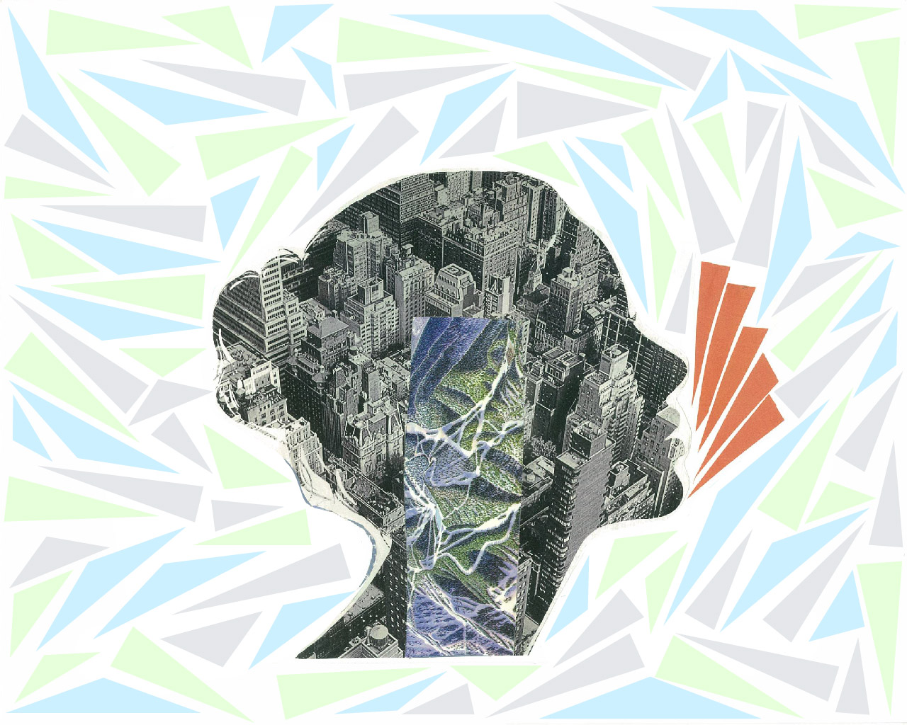

| Group Video Project - Intro to Video Art Class Fall 2019 at San Jose State University -
Medium: Recorded Video, TouchDesigner, Adobe Premiere Pro
Audio: "Lust for Love" by White Hex (Youtube Free Audio Library) |
Our Group Installation Proposal:
Our installation proposal called ‘Wanderlust,” is based around the idea of driving towards a sunset. My groupmate recorded this video of a sunset from the side view of the passenger window in her car. This single clip inspired our entire
project/installation proposal. We wanted to create and provide an experience that allowed viewers to see an aesthetically pleasing array of colors in a normal view, kaleidoscope view, and glitch effect view on a “multichannel” setting. Given
that this is a proposal, we placed all three clips on one single screen for the sake of time and easier access to playing the movie.
The colorful sunset provided unique opportunities to transform the clip into three different versions using TouchDesigner and Premiere Pro. We then placed the three clips horizontally on one single screen in Premiere Pro, which created a
“multichannel” effect. If this proposal were to be turned into an installation, we envisioned that each video would be on its own personal mini screen television and played as a real multichannel video in a small room. The vast array of
complementary colors from this single clip would provide an “ethereal” mood to the installation and invoke viewers to feel a sense of “Wanderlust.”
My role for this project was all of the Premiere Pro effects, and organizing of the video that allowed the "multichannel" effect that gave us our desired result.
~
BEAUTIFUL COMPANIONS
| Final Video Project - Multimedia Class Fall 2018 at Ohlone College -
Medium: Filmed Clips, Premiere Pro, Free Youtube Audio
*Filmed on iPhone 7 |
In this film I wanted to show viewers the amazing women that I have been blessed to have in my life. These women have followed me throughout my highest of highs and and lowest of lows. When given the opportunity to film the people in my life
that bring utter joy and happiness to me, I took complete advantage. My long term vision for this project is not just that the viewer sees two beautiful women walking around a garden, but that the viewer will feel how beautiful friendship is,
when nurtured and cared for properly. It is far from common to find a friendship quite like this one, and in this film it perfectly captures how important having community is.
~
MATTER OVER MIND
| 2D Collage Project - 2D Class Fall 2018 at Ohlone College
Medium: Adobe Illustrator, Magazine Clippings |
In this project I expanded on an idea that branched from the moment I found the clipping of the facial outline from a magazine. The relationship between technology and nature fascinates me yet frustrates me on a daily basis. As a child, I always wanted to
be outdoors in nature and pretending with my sister to be fantasy-like creatures. Now we are absorbed by technology and it's never ending tunnel of advancement. I believe there should be a balance, whilst keeping our harmonious nature in the
center. Technology has benefited our society and economy enormously, but I don't want to be one that is found lost playing a small role in a big company. I want to be the one that advocates for sustainable technology usage that mends the
bridge between that and nature. I believe this collage depicts how we should consider the role we play within the ever growing friend we call technology, and most importantly how we can make that bridge happen. Being a woman in the
twenty-first century, I see how society portrays us as lesser than in terms of standing up for what we are passionate about. But I don't believe this for a second, it doesn't matter to me who is advocating for what, so long as it is the
truth. Using Adobe Illustator to create shapes that which accentuate the clipping allows the viewer to see the figurative "voice" of the artwork.

~
MOGA!
| Public Art Poster Project - Digital Graphics Class Fall 2018 at Ohlone College
Medium: Adobe Illustrator |
My goal for this piece was always to keep everything simple, yet visually compelling. Although this piece was created in 2018, I set the date of the MOGA Museum to "begin" in 2019, to provide the viewer a more futuristic impression. My
inspiration behind "MOGA!" began when I was researching for ideas and fell upon this picture of raindrops. The thought that raindrops are always round, and continuously falling gave me the idea to create something completely similar yet
opposite. The result ended with flat rain drops that were stopped in time/motion. My inspiration has always led me down interesting pathways, almost never as how I originally envisioned. "MOGA" resulted with the most different than I had
originally planned, but also the most satisfied.